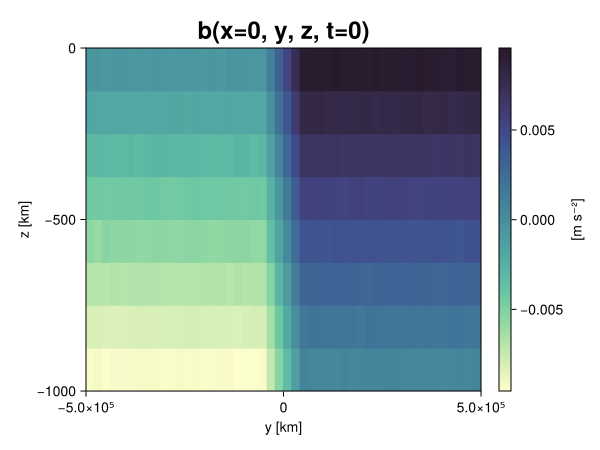
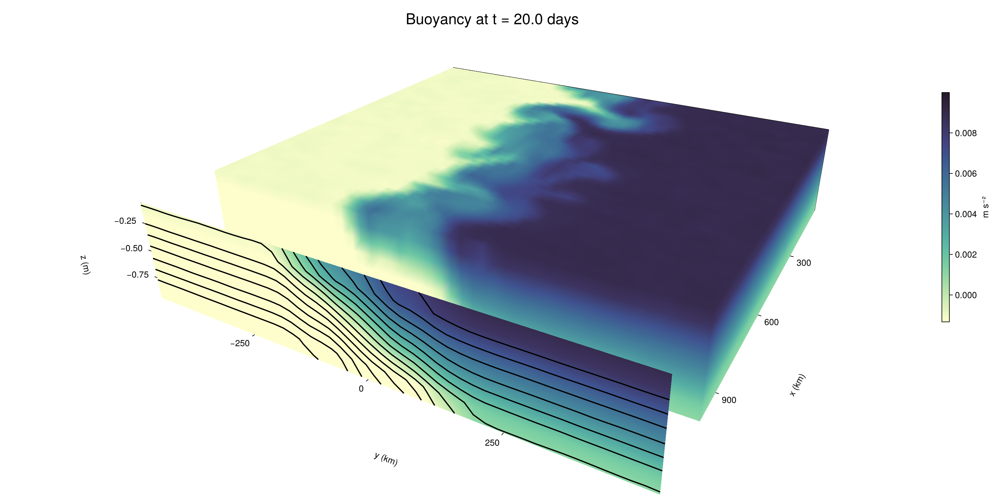

Baroclinic adjustment
In this example, we simulate the evolution and equilibration of a baroclinically unstable front.
Install dependencies
First let's make sure we have all required packages installed.
using Pkg
pkg"add Oceananigans, CairoMakie"using Oceananigans
using Oceananigans.UnitsGrid
We use a three-dimensional channel that is periodic in the x direction:
Lx = 1000kilometers # east-west extent [m]
Ly = 1000kilometers # north-south extent [m]
Lz = 1kilometers # depth [m]
grid = RectilinearGrid(size = (48, 48, 8),
x = (0, Lx),
y = (-Ly/2, Ly/2),
z = (-Lz, 0),
topology = (Periodic, Bounded, Bounded))48×48×8 RectilinearGrid{Float64, Periodic, Bounded, Bounded} on CPU with 3×3×3 halo
├── Periodic x ∈ [0.0, 1.0e6) regularly spaced with Δx=20833.3
├── Bounded y ∈ [-500000.0, 500000.0] regularly spaced with Δy=20833.3
└── Bounded z ∈ [-1000.0, 0.0] regularly spaced with Δz=125.0Model
We built a HydrostaticFreeSurfaceModel with an ImplicitFreeSurface solver. Regarding Coriolis, we use a beta-plane centered at 45° South.
model = HydrostaticFreeSurfaceModel(; grid,
coriolis = BetaPlane(latitude = -45),
buoyancy = BuoyancyTracer(),
tracers = :b,
momentum_advection = WENO(),
tracer_advection = WENO())HydrostaticFreeSurfaceModel{CPU, RectilinearGrid}(time = 0 seconds, iteration = 0)
├── grid: 48×48×8 RectilinearGrid{Float64, Periodic, Bounded, Bounded} on CPU with 3×3×3 halo
├── timestepper: QuasiAdamsBashforth2TimeStepper
├── tracers: b
├── closure: Nothing
├── buoyancy: BuoyancyTracer with ĝ = NegativeZDirection()
├── free surface: ImplicitFreeSurface with gravitational acceleration 9.80665 m s⁻²
│ └── solver: FFTImplicitFreeSurfaceSolver
├── advection scheme:
│ ├── momentum: WENO reconstruction order 5
│ └── b: WENO reconstruction order 5
└── coriolis: BetaPlane{Float64}We start our simulation from rest with a baroclinically unstable buoyancy distribution. We use ramp(y, Δy), defined below, to specify a front with width Δy and horizontal buoyancy gradient M². We impose the front on top of a vertical buoyancy gradient N² and a bit of noise.
"""
ramp(y, Δy)
Linear ramp from 0 to 1 between -Δy/2 and +Δy/2.
For example:
```
y < -Δy/2 => ramp = 0
-Δy/2 < y < -Δy/2 => ramp = y / Δy
y > Δy/2 => ramp = 1
```
"""
ramp(y, Δy) = min(max(0, y/Δy + 1/2), 1)
N² = 1e-5 # [s⁻²] buoyancy frequency / stratification
M² = 1e-7 # [s⁻²] horizontal buoyancy gradient
Δy = 100kilometers # width of the region of the front
Δb = Δy * M² # buoyancy jump associated with the front
ϵb = 1e-2 * Δb # noise amplitude
bᵢ(x, y, z) = N² * z + Δb * ramp(y, Δy) + ϵb * randn()
set!(model, b=bᵢ)Let's visualize the initial buoyancy distribution.
using CairoMakie
# Build coordinates with units of kilometers
x, y, z = 1e-3 .* nodes(grid, (Center(), Center(), Center()))
b = model.tracers.b
fig, ax, hm = heatmap(view(b, 1, :, :),
colormap = :deep,
axis = (xlabel = "y [km]",
ylabel = "z [km]",
title = "b(x=0, y, z, t=0)",
titlesize = 24))
Colorbar(fig[1, 2], hm, label = "[m s⁻²]")
fig
Simulation
Now let's build a Simulation.
simulation = Simulation(model, Δt=20minutes, stop_time=20days)Simulation of HydrostaticFreeSurfaceModel{CPU, RectilinearGrid}(time = 0 seconds, iteration = 0)
├── Next time step: 20 minutes
├── Elapsed wall time: 0 seconds
├── Wall time per iteration: NaN days
├── Stop time: 20 days
├── Stop iteration : Inf
├── Wall time limit: Inf
├── Callbacks: OrderedDict with 4 entries:
│ ├── stop_time_exceeded => Callback of stop_time_exceeded on IterationInterval(1)
│ ├── stop_iteration_exceeded => Callback of stop_iteration_exceeded on IterationInterval(1)
│ ├── wall_time_limit_exceeded => Callback of wall_time_limit_exceeded on IterationInterval(1)
│ └── nan_checker => Callback of NaNChecker for u on IterationInterval(100)
├── Output writers: OrderedDict with no entries
└── Diagnostics: OrderedDict with no entriesWe add a TimeStepWizard callback to adapt the simulation's time-step,
conjure_time_step_wizard!(simulation, IterationInterval(20), cfl=0.2, max_Δt=20minutes)Also, we add a callback to print a message about how the simulation is going,
using Printf
wall_clock = Ref(time_ns())
function print_progress(sim)
u, v, w = model.velocities
progress = 100 * (time(sim) / sim.stop_time)
elapsed = (time_ns() - wall_clock[]) / 1e9
@printf("[%05.2f%%] i: %d, t: %s, wall time: %s, max(u): (%6.3e, %6.3e, %6.3e) m/s, next Δt: %s\n",
progress, iteration(sim), prettytime(sim), prettytime(elapsed),
maximum(abs, u), maximum(abs, v), maximum(abs, w), prettytime(sim.Δt))
wall_clock[] = time_ns()
return nothing
end
add_callback!(simulation, print_progress, IterationInterval(100))Diagnostics/Output
Here, we save the buoyancy, $b$, at the edges of our domain as well as the zonal ($x$) average of buoyancy.
u, v, w = model.velocities
ζ = ∂x(v) - ∂y(u)
B = Average(b, dims=1)
U = Average(u, dims=1)
V = Average(v, dims=1)
filename = "baroclinic_adjustment"
save_fields_interval = 0.5day
slicers = (east = (grid.Nx, :, :),
north = (:, grid.Ny, :),
bottom = (:, :, 1),
top = (:, :, grid.Nz))
for side in keys(slicers)
indices = slicers[side]
simulation.output_writers[side] = JLD2OutputWriter(model, (; b, ζ);
filename = filename * "_$(side)_slice",
schedule = TimeInterval(save_fields_interval),
overwrite_existing = true,
indices)
end
simulation.output_writers[:zonal] = JLD2OutputWriter(model, (; b=B, u=U, v=V);
filename = filename * "_zonal_average",
schedule = TimeInterval(save_fields_interval),
overwrite_existing = true)JLD2OutputWriter scheduled on TimeInterval(12 hours):
├── filepath: ./baroclinic_adjustment_zonal_average.jld2
├── 3 outputs: (b, u, v)
├── array type: Array{Float64}
├── including: [:grid, :coriolis, :buoyancy, :closure]
├── file_splitting: NoFileSplitting
└── file size: 30.7 KiBNow we're ready to run.
@info "Running the simulation..."
run!(simulation)
@info "Simulation completed in " * prettytime(simulation.run_wall_time)[ Info: Running the simulation...
[ Info: Initializing simulation...
[00.00%] i: 0, t: 0 seconds, wall time: 29.808 seconds, max(u): (0.000e+00, 0.000e+00, 0.000e+00) m/s, next Δt: 20 minutes
[ Info: ... simulation initialization complete (29.891 seconds)
[ Info: Executing initial time step...
[ Info: ... initial time step complete (23.016 seconds).
[06.94%] i: 100, t: 1.389 days, wall time: 43.205 seconds, max(u): (1.318e-01, 1.139e-01, 1.542e-03) m/s, next Δt: 20 minutes
[13.89%] i: 200, t: 2.778 days, wall time: 1.804 seconds, max(u): (2.207e-01, 1.852e-01, 1.814e-03) m/s, next Δt: 20 minutes
[20.83%] i: 300, t: 4.167 days, wall time: 1.234 seconds, max(u): (3.111e-01, 2.491e-01, 1.959e-03) m/s, next Δt: 20 minutes
[27.78%] i: 400, t: 5.556 days, wall time: 1.155 seconds, max(u): (3.871e-01, 3.607e-01, 1.902e-03) m/s, next Δt: 20 minutes
[34.72%] i: 500, t: 6.944 days, wall time: 1.162 seconds, max(u): (4.939e-01, 4.900e-01, 2.087e-03) m/s, next Δt: 20 minutes
[41.67%] i: 600, t: 8.333 days, wall time: 1.147 seconds, max(u): (6.388e-01, 8.436e-01, 2.960e-03) m/s, next Δt: 20 minutes
[48.61%] i: 700, t: 9.722 days, wall time: 1.241 seconds, max(u): (8.278e-01, 1.256e+00, 3.502e-03) m/s, next Δt: 20 minutes
[55.56%] i: 800, t: 11.111 days, wall time: 1.296 seconds, max(u): (1.244e+00, 1.257e+00, 4.317e-03) m/s, next Δt: 20 minutes
[62.50%] i: 900, t: 12.500 days, wall time: 1.247 seconds, max(u): (1.357e+00, 1.128e+00, 5.213e-03) m/s, next Δt: 20 minutes
[69.44%] i: 1000, t: 13.889 days, wall time: 1.287 seconds, max(u): (1.280e+00, 1.225e+00, 4.318e-03) m/s, next Δt: 20 minutes
[76.39%] i: 1100, t: 15.278 days, wall time: 1.146 seconds, max(u): (1.255e+00, 1.013e+00, 2.851e-03) m/s, next Δt: 20 minutes
[83.33%] i: 1200, t: 16.667 days, wall time: 1.179 seconds, max(u): (1.323e+00, 9.988e-01, 2.969e-03) m/s, next Δt: 20 minutes
[90.28%] i: 1300, t: 18.056 days, wall time: 1.139 seconds, max(u): (1.409e+00, 9.156e-01, 2.239e-03) m/s, next Δt: 20 minutes
[97.22%] i: 1400, t: 19.444 days, wall time: 1.356 seconds, max(u): (1.285e+00, 9.374e-01, 3.696e-03) m/s, next Δt: 20 minutes
[ Info: Simulation is stopping after running for 1.270 minutes.
[ Info: Simulation time 20 days equals or exceeds stop time 20 days.
[ Info: Simulation completed in 1.271 minutes
Visualization
All that's left is to make a pretty movie. Actually, we make two visualizations here. First, we illustrate how to make a 3D visualization with Makie's Axis3 and Makie.surface. Then we make a movie in 2D. We use CairoMakie in this example, but note that using GLMakie is more convenient on a system with OpenGL, as figures will be displayed on the screen.
using CairoMakieThree-dimensional visualization
We load the saved buoyancy output on the top, north, and east surface as FieldTimeSerieses.
filename = "baroclinic_adjustment"
sides = keys(slicers)
slice_filenames = NamedTuple(side => filename * "_$(side)_slice.jld2" for side in sides)
b_timeserieses = (east = FieldTimeSeries(slice_filenames.east, "b"),
north = FieldTimeSeries(slice_filenames.north, "b"),
top = FieldTimeSeries(slice_filenames.top, "b"))
B_timeseries = FieldTimeSeries(filename * "_zonal_average.jld2", "b")
times = B_timeseries.times
grid = B_timeseries.grid48×48×8 RectilinearGrid{Float64, Periodic, Bounded, Bounded} on CPU with 3×3×3 halo
├── Periodic x ∈ [0.0, 1.0e6) regularly spaced with Δx=20833.3
├── Bounded y ∈ [-500000.0, 500000.0] regularly spaced with Δy=20833.3
└── Bounded z ∈ [-1000.0, 0.0] regularly spaced with Δz=125.0We build the coordinates. We rescale horizontal coordinates to kilometers.
xb, yb, zb = nodes(b_timeserieses.east)
xb = xb ./ 1e3 # convert m -> km
yb = yb ./ 1e3 # convert m -> km
Nx, Ny, Nz = size(grid)
x_xz = repeat(x, 1, Nz)
y_xz_north = y[end] * ones(Nx, Nz)
z_xz = repeat(reshape(z, 1, Nz), Nx, 1)
x_yz_east = x[end] * ones(Ny, Nz)
y_yz = repeat(y, 1, Nz)
z_yz = repeat(reshape(z, 1, Nz), grid.Ny, 1)
x_xy = x
y_xy = y
z_xy_top = z[end] * ones(grid.Nx, grid.Ny)Then we create a 3D axis. We use zonal_slice_displacement to control where the plot of the instantaneous zonal average flow is located.
fig = Figure(size = (1600, 800))
zonal_slice_displacement = 1.2
ax = Axis3(fig[2, 1],
aspect=(1, 1, 1/5),
xlabel = "x (km)",
ylabel = "y (km)",
zlabel = "z (m)",
xlabeloffset = 100,
ylabeloffset = 100,
zlabeloffset = 100,
limits = ((x[1], zonal_slice_displacement * x[end]), (y[1], y[end]), (z[1], z[end])),
elevation = 0.45,
azimuth = 6.8,
xspinesvisible = false,
zgridvisible = false,
protrusions = 40,
perspectiveness = 0.7)Axis3()We use data from the final savepoint for the 3D plot. Note that this plot can easily be animated by using Makie's Observable. To dive into Observables, check out Makie.jl's Documentation.
n = length(times)41Now let's make a 3D plot of the buoyancy and in front of it we'll use the zonally-averaged output to plot the instantaneous zonal-average of the buoyancy.
b_slices = (east = interior(b_timeserieses.east[n], 1, :, :),
north = interior(b_timeserieses.north[n], :, 1, :),
top = interior(b_timeserieses.top[n], :, :, 1))
# Zonally-averaged buoyancy
B = interior(B_timeseries[n], 1, :, :)
clims = 1.1 .* extrema(b_timeserieses.top[n][:])
kwargs = (colorrange=clims, colormap=:deep, shading=NoShading)
surface!(ax, x_yz_east, y_yz, z_yz; color = b_slices.east, kwargs...)
surface!(ax, x_xz, y_xz_north, z_xz; color = b_slices.north, kwargs...)
surface!(ax, x_xy, y_xy, z_xy_top; color = b_slices.top, kwargs...)
sf = surface!(ax, zonal_slice_displacement .* x_yz_east, y_yz, z_yz; color = B, kwargs...)
contour!(ax, y, z, B; transformation = (:yz, zonal_slice_displacement * x[end]),
levels = 15, linewidth = 2, color = :black)
Colorbar(fig[2, 2], sf, label = "m s⁻²", height = Relative(0.4), tellheight=false)
title = "Buoyancy at t = " * string(round(times[n] / day, digits=1)) * " days"
fig[1, 1:2] = Label(fig, title; fontsize = 24, tellwidth = false, padding = (0, 0, -120, 0))
rowgap!(fig.layout, 1, Relative(-0.2))
colgap!(fig.layout, 1, Relative(-0.1))
save("baroclinic_adjustment_3d.png", fig)
Two-dimensional movie
We make a 2D movie that shows buoyancy $b$ and vertical vorticity $ζ$ at the surface, as well as the zonally-averaged zonal and meridional velocities $U$ and $V$ in the $(y, z)$ plane. First we load the FieldTimeSeries and extract the additional coordinates we'll need for plotting
ζ_timeseries = FieldTimeSeries(slice_filenames.top, "ζ")
U_timeseries = FieldTimeSeries(filename * "_zonal_average.jld2", "u")
B_timeseries = FieldTimeSeries(filename * "_zonal_average.jld2", "b")
V_timeseries = FieldTimeSeries(filename * "_zonal_average.jld2", "v")
xζ, yζ, zζ = nodes(ζ_timeseries)
yv = ynodes(V_timeseries)
xζ = xζ ./ 1e3 # convert m -> km
yζ = yζ ./ 1e3 # convert m -> km
yv = yv ./ 1e3 # convert m -> km49-element Vector{Float64}:
-500.0
-479.1666666666667
-458.3333333333333
-437.5
-416.6666666666667
-395.8333333333333
-375.0
-354.1666666666667
-333.3333333333333
-312.5
-291.6666666666667
-270.8333333333333
-250.0
-229.16666666666666
-208.33333333333334
-187.5
-166.66666666666666
-145.83333333333334
-125.0
-104.16666666666667
-83.33333333333333
-62.5
-41.666666666666664
-20.833333333333332
0.0
20.833333333333332
41.666666666666664
62.5
83.33333333333333
104.16666666666667
125.0
145.83333333333334
166.66666666666666
187.5
208.33333333333334
229.16666666666666
250.0
270.8333333333333
291.6666666666667
312.5
333.3333333333333
354.1666666666667
375.0
395.8333333333333
416.6666666666667
437.5
458.3333333333333
479.1666666666667
500.0Next, we set up a plot with 4 panels. The top panels are large and square, while the bottom panels get a reduced aspect ratio through rowsize!.
set_theme!(Theme(fontsize=24))
fig = Figure(size=(1800, 1000))
axb = Axis(fig[1, 2], xlabel="x (km)", ylabel="y (km)", aspect=1)
axζ = Axis(fig[1, 3], xlabel="x (km)", ylabel="y (km)", aspect=1, yaxisposition=:right)
axu = Axis(fig[2, 2], xlabel="y (km)", ylabel="z (m)")
axv = Axis(fig[2, 3], xlabel="y (km)", ylabel="z (m)", yaxisposition=:right)
rowsize!(fig.layout, 2, Relative(0.3))To prepare a plot for animation, we index the timeseries with an Observable,
n = Observable(1)
b_top = @lift interior(b_timeserieses.top[$n], :, :, 1)
ζ_top = @lift interior(ζ_timeseries[$n], :, :, 1)
U = @lift interior(U_timeseries[$n], 1, :, :)
V = @lift interior(V_timeseries[$n], 1, :, :)
B = @lift interior(B_timeseries[$n], 1, :, :)Observable([-0.009377864754901273 -0.008135111149361777 -0.006870233519378935 -0.005627607345093548 -0.00438081805233155 -0.0031406570919375342 -0.001856299548056803 -0.000629251481919361; -0.0093576916057594 -0.008138137562461392 -0.006862350092149312 -0.005640862388830769 -0.004394242814163055 -0.003133946796089896 -0.0018838321447419914 -0.0006332142484242318; -0.00937433325150286 -0.008130207304505846 -0.0068558860187429025 -0.005626045732204034 -0.00437257326615799 -0.0031483156388893365 -0.0018792328685108127 -0.0006249084040587629; -0.00939759611268901 -0.008141602767375715 -0.006863125288905601 -0.005651974553556698 -0.004369795189303415 -0.0031112668924379735 -0.0018602422160548925 -0.0006109907374358972; -0.009383117790387455 -0.00814019057096684 -0.006869580528748712 -0.005630777705094534 -0.004354010480842337 -0.0031411879027534785 -0.0018804678904448433 -0.0006027997488768873; -0.009392589196417025 -0.008121881295503628 -0.0068728093420101916 -0.00560821289857925 -0.00437080320230978 -0.003137472951687257 -0.001859390119931743 -0.0006140713170903121; -0.009375898395120857 -0.008133551846327773 -0.006881287749815724 -0.005615310240227306 -0.004365795620309802 -0.003143327446706069 -0.0018559218387067201 -0.0006400352772084431; -0.009364919452441571 -0.008118885061089777 -0.006878176892293505 -0.005637591060811875 -0.004360472502290884 -0.0031029370461855064 -0.001881550979815139 -0.000643608466567175; -0.009381225594726353 -0.008121112770140142 -0.006895855498761552 -0.005642336373802219 -0.004358597643336708 -0.003139742629494504 -0.0019012142591640505 -0.0006330438424828832; -0.009360671341206545 -0.008122338070479176 -0.006872487026041697 -0.005630582397136867 -0.004377371799461459 -0.0031040894266793767 -0.0018708728217023917 -0.0006338220561318484; -0.00939301416615442 -0.008139665736913541 -0.006878700401121374 -0.005596316631811825 -0.004372433357000186 -0.003150099501451901 -0.0018434658509113896 -0.0006312357011083917; -0.009368429287534194 -0.008106537379646091 -0.006885869593399654 -0.005632809780766023 -0.004384812083408765 -0.0031190963672310095 -0.001873783509962531 -0.0006155486628805542; -0.009381756581049042 -0.008122180206752505 -0.006880471055378091 -0.005625491378991261 -0.004385226674432261 -0.003121134843155657 -0.0018802324034936568 -0.0006065848619425416; -0.009378972471201829 -0.008125088137803311 -0.00687668424041078 -0.005635724513385144 -0.004376606878072969 -0.0031164131152262103 -0.0018557066395019845 -0.0006199004094155584; -0.009373963648460758 -0.008112661590965223 -0.006883688711193108 -0.005611711608902163 -0.004395706573435175 -0.0031116052581820416 -0.001868488594839704 -0.0006407567988447911; -0.009393893196688109 -0.008118617006621361 -0.0068799997029737854 -0.005635021293280134 -0.004378431152223139 -0.003132837846541094 -0.0018686536224667815 -0.0006267468940679208; -0.009376320961608292 -0.008115511557187536 -0.0068717492621350055 -0.005629211082483724 -0.004354667718633556 -0.003124868398971748 -0.0018715224388412912 -0.000624057059498116; -0.009357645806020656 -0.008119649315707 -0.0068670202737405065 -0.005630556446920176 -0.004388041432459443 -0.0031255240743908396 -0.0018708393416565449 -0.0005957355519055192; -0.009372723781235473 -0.008101003303095966 -0.0068575965861616545 -0.005615558380633645 -0.004383617569849232 -0.003128263738470303 -0.0018983906420512394 -0.0006116423936853802; -0.00939755783058738 -0.008120005578267066 -0.006881639199561582 -0.005622707242478726 -0.004372305481549265 -0.003139200515962099 -0.0018601615092782187 -0.0006205416773063429; -0.00937328484919493 -0.008119727423548198 -0.006880829628497213 -0.005638920843952917 -0.004388604670860404 -0.0031034110513833402 -0.0018713410527970234 -0.000616566586075336; -0.009357191439071358 -0.008147572173804844 -0.006875724408655931 -0.005632294402115314 -0.004381820620221411 -0.0031366211007978224 -0.0018806910759677378 -0.0006385291838053409; -0.00751073766889247 -0.006243890310125855 -0.0050000557818005295 -0.0037458161985469535 -0.0025198239174467575 -0.001272641311192351 3.791713609531495e-6 0.0012397551932792985; -0.005402861718303916 -0.0041598748167249976 -0.00292113592876682 -0.001679167110269978 -0.0004462990669816869 0.0008464485267630873 0.0020794765312075196 0.0033621078823044704; -0.0033640962735505438 -0.0020528236100699096 -0.0008298894078748895 0.00040843330921082826 0.001651282188387074 0.002927586418667461 0.004156163328427053 0.005416757400868152; -0.0012558141889848792 3.5076147643710376e-5 0.0012269273329169772 0.002509870597575527 0.0037571491612806373 0.004994116203803974 0.0062461080338305055 0.007499443909847521; 0.0006548874220783113 0.0018860261162198238 0.0031103948848598523 0.004368925356532146 0.005638028437672153 0.00687838607501954 0.0081402685701705 0.009383304967422826; 0.0006472284303794249 0.001885265867681758 0.003105769769592606 0.004373121540171177 0.005614721851705146 0.0068694820156678755 0.008138567758184046 0.009361985184666103; 0.0006086968005960272 0.0018947736358062312 0.003116447903046637 0.0043800193822411395 0.005588659705212907 0.0068622587408122765 0.008112411397555768 0.009363400029559266; 0.0006492266441962008 0.0018712675929416387 0.0031016119366785327 0.004377307653054611 0.005586106162334438 0.006904600226823626 0.008132142791675309 0.009385098972397804; 0.0006241662624194617 0.0018715587997181666 0.003143492108447055 0.004368621653988671 0.005619150122373302 0.00688325709470301 0.008117231199949062 0.009381538917334755; 0.0006409402904779648 0.0018895573321636866 0.0031356151969717874 0.004384631261417783 0.005626620202396861 0.0068769629490095 0.008127841516633205 0.009375550112323357; 0.0006131203030604175 0.0018475525495553434 0.0031489579580453 0.00438022883546679 0.0056221438480144985 0.006871168607826518 0.008115646929007835 0.009363834713076724; 0.0006134152307271857 0.0018481578429087573 0.0031232314200500995 0.00437622258837657 0.005624032953251764 0.006875267406551725 0.008081410056534146 0.009381243954138084; 0.000609502758810106 0.0018658772305717684 0.003108806506008635 0.00437507107059033 0.005635373775464744 0.0068595048457908495 0.00813216738752577 0.009371245007785136; 0.0006370291046073879 0.0018842837750201802 0.0030962601050298316 0.004393380819567801 0.0056177927165864 0.00687916357746354 0.008110747062560382 0.009361374665757302; 0.0006359892935092014 0.001860586564359588 0.0031391497189600845 0.004385055461559865 0.005640699081964043 0.006897694883715504 0.00812353477822094 0.009378938909334054; 0.0006536559636197339 0.0018443465704512834 0.0031291789112925564 0.004383541355255425 0.005596225835181293 0.006880219339407762 0.008097532094892841 0.009386733911000839; 0.0006425765035794172 0.0018884589683555448 0.0031195026614116565 0.004354914262521444 0.005631886660109767 0.006870876103835692 0.008148926215087544 0.009388561635175029; 0.0006313969642147539 0.001855909800509553 0.0031324581139665648 0.004384616177997778 0.0056373848120444174 0.006869313689829781 0.00813888630086215 0.009350260692226267; 0.000605728494448668 0.00183440176307227 0.0031126776803031228 0.004367862792287027 0.005616059180551798 0.0068753723448674205 0.00815600086550044 0.009399114500841514; 0.000611979492414003 0.0018776127897193941 0.003129784497390622 0.00436696055460381 0.005635624658801713 0.006888844287162201 0.008125175218300695 0.009398685536477052; 0.0006224640409260927 0.0018682164810691563 0.0031259303265195808 0.004413792474242833 0.0056238617389210085 0.006869781621140245 0.008126924624637724 0.009350865692493389; 0.0005900331074994605 0.001862326965005819 0.003106986939574502 0.004381691495419125 0.005614161828745506 0.00686213822858919 0.008132851702993885 0.009406801971550903; 0.0006148796799514779 0.0018834892386480914 0.0031248346766083565 0.0043760063546960755 0.0056292256237886265 0.006868112436664989 0.008090322124536876 0.009367313597718108; 0.000617650713939291 0.0018810859578942823 0.003114339610966498 0.004362073155372569 0.005610227658592826 0.006878991511727529 0.00815895892329907 0.009374179397952495; 0.0006019801178569675 0.001871224775418505 0.0031049725432997243 0.004385614191848829 0.005622407047725872 0.00689107427308758 0.008125731942557576 0.009382364243359245; 0.000629224173723711 0.0018809014455603565 0.0031047885231738717 0.004380584675469031 0.005622981014988059 0.006878487680818081 0.008131754249994332 0.009372372012484538])
and then build our plot:
hm = heatmap!(axb, xb, yb, b_top, colorrange=(0, Δb), colormap=:thermal)
Colorbar(fig[1, 1], hm, flipaxis=false, label="Surface b(x, y) (m s⁻²)")
hm = heatmap!(axζ, xζ, yζ, ζ_top, colorrange=(-5e-5, 5e-5), colormap=:balance)
Colorbar(fig[1, 4], hm, label="Surface ζ(x, y) (s⁻¹)")
hm = heatmap!(axu, yb, zb, U; colorrange=(-5e-1, 5e-1), colormap=:balance)
Colorbar(fig[2, 1], hm, flipaxis=false, label="Zonally-averaged U(y, z) (m s⁻¹)")
contour!(axu, yb, zb, B; levels=15, color=:black)
hm = heatmap!(axv, yv, zb, V; colorrange=(-1e-1, 1e-1), colormap=:balance)
Colorbar(fig[2, 4], hm, label="Zonally-averaged V(y, z) (m s⁻¹)")
contour!(axv, yb, zb, B; levels=15, color=:black)Finally, we're ready to record the movie.
frames = 1:length(times)
record(fig, filename * ".mp4", frames, framerate=8) do i
n[] = i
endThis page was generated using Literate.jl.